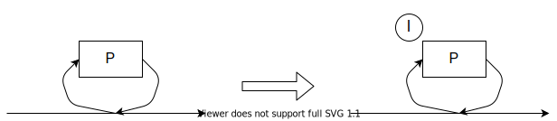

3.3 First-Order Logic and Symbolic Representations
プログラミング言語やHDLで書かれた特定のsemanticsを抜き出すため、一階述語論理を用いる
- 注意点
- この章で用いる論理体系や意味論はinformalなもの
- 変数間の制約を表すために、一階述語論理を用いる
状態をsystem variableで表す
- state \(s: V \rightarrow \cup_{v \in V} D_v\)
- \(V = \{v_1, ..., v_n\}\) (system variablesの集合)
- \(D_v\): 各変数毎のdomain(型)
- valuation: 変数を\(D_v\)内の値に結びつける関数
- ex.) \(V = \{v_1, v_2, v_3\}, D_{v_i} = \mathbb{N},\)valuation: \(\langle v_1 \mapsto 2, v_2 \mapsto 3, v_3 \mapsto 5 \rangle\)
- valuationを式で表す:
- \((v_1 = 2) \land (v_2 = 3) \land (v_3 = 5)\)
- "状態の式表現"を使えば、状態集合(のsubset)も式(first-order formula)で表すことができる
-
\( \{ \langle v_1 \mapsto 2, v_2 \mapsto 3, v_3 \mapsto 1 \rangle,\)
\( \quad \langle v_1 \mapsto 2, v_2 \mapsto 3, v_3 \mapsto 2 \rangle,\)
\( \quad \langle v_1 \mapsto 2, v_2 \mapsto 3, v_3 \mapsto 3 \rangle\} \)
-
\( ((v_1 = 2) \land (v_2 = 3) \land (v_3 = 1)) \; \lor \)
\( ((v_1 = 2) \land (v_2 = 3) \land (v_3 = 2)) \; \lor \)
\( ((v_1 = 2) \land (v_2 = 3) \land (v_3 = 3)) \; \lor \)
- state \(s\)がfirst-order formula \(\phi\)で表される: \(s \vDash \phi\)
first-order formulaを使うメリット1: 式の単純化が可能
-
\( ((v_1 = 2) \land (v_2 = 3) \land (v_3 = 1)) \; \lor \)
\( ((v_1 = 2) \land (v_2 = 3) \land (v_3 = 2)) \; \lor \quad \Leftrightarrow \quad (v_1 = 2) \land (v_2 = 3) \land (v_3 \geq 1) \land (v_3 \leq 3) \)
\( ((v_1 = 2) \land (v_2 = 3) \land (v_3 = 3)) \; \lor \)
first-order formulaを使うメリット2: (通常の)集合演算を適用可能
- \(A, B\): 状態集合\(S\)のsubset
- \(\mathcal{A}(s), \mathcal{B}(s)\): 対応するfirst-order formula
-
| set expr |
formula expr |
| \(A \cup B\) |
\(\mathcal{A}(s) \lor \mathcal{B}(s) \) |
| \(A \cap B\) |
\(\mathcal{A}(s) \land \mathcal{B}(s) \) |
| \(S \setminus A\) |
\(\neg \mathcal{A}(s) \) |
| \(A \subseteq B\) |
\(\mathcal{A}(s) \Rightarrow \mathcal{B}(s) \) |
first-order logicでtransition relationを表現してみよう
- 状態遷移前後どちらかのみで必要な変数があるかもしれないので、状態遷移前後でのsystem variablesの集合を分ける
- \(V\): present state variables
- \(V'\): next state variables
- 変数\(v \in V \cup V'\)のvariationの変化は、transitionに対応する
- transition relation \(R \subseteq S \times S\)に対し:
- \(\mathcal{R}(V,V')\)がtransitionを表す
-
ex.) \(V = V' = \{v_1, v_2, v_3\}\)のもとで
\( \qquad\qquad (v_1' = v_1) \land (v_2' = v_2 + 1)\)
は、
- \(v_1\): 一定・増えた・減った・関係ない
- \(v_2\): 一定・増えた・減った・関係ない
- \(v_3\): 一定・増えた・減った・関係ない
-
\(v_1\): 一定
\(v_2\): (1)増えた
\(v_3\): 関係ない
- transition (pair) \((s,s')\)がfirst-order formula \(\phi\)で表される: \(s, s' \vDash \phi\)
first-order logicでatomic propositionを表現してみよう
- あるpropertyがtrueであるかfalseであるかは、state(=valuation)に依る
- 特にlabel \(l \in \mathit{AP} \)は次のように書くことができる:
- \(v = d \quad\) where \(v \in V, d \in D_v\)
- \(s(v)=d\)であれば、state \(s\)で命題\((v = d)\)がtrue
- state \(s\)で命題\((v = d)\)が成立
- \((v = d) \in L(s)\)
- 一般的な命題も一階述語論理で記述可能
- ex.) \(v_1 > v_2 \land v_2 > v_3\)
- 各label \(l \in \mathit{AP}\)に対し:
- \(s \vDash l\): \(l \in L(s)\) (状態\(s\)でlabel \(l\)はtrue)
- \(s \not \vDash l\): \(l \not \in L(s)\)
Kripke structureを再び構成してみよう
- states \(S\)の集合 = \(V\)に対しての全てのvaluationの集合
- initial states \(S_0\)の集合 = 式\(\mathcal{S}_0\)を満たす(\(s \vDash \mathcal{S}_0\))全てのvaluationの集合
- 2つのstate \(s,s'\)が\(R(s,s')\)の関係にある \(\; \mathit{iff} \;\) \(s,s' \vDash \mathcal{R}\)
- \(L(s)\)は、state \(s\)においてtrueとなる全てのラベルの集合(\(s \vDash l\))
例題
前提条件
- システム変数: \(V = \{x, y\}\)
- 変数のdomain: \(D = \{0,1,2\}\)
- valuationの表現方法: \((x\texttt{の値},y\texttt{の値})\)
- initial state: \(\mathcal{S}_0(x,y) \equiv x=1 \land y=1\)
- systemの1動作: \(x:= (x+y) \;\mathit{mod}\; 3\)
- transitionの集合: \(\mathcal{R}(\{x,y\},\{x',y'\}) \equiv x':= (x+y) \;\mathit{mod}\; 3 \land y'=y\)
Kripke structure \(M = (S, S_0, R, \mathit{AP}, L)\)を定義する
\(S=\)?
\(S=\{(0,0),(0,1),(0,2),(1,0),(1,1),(1,2),(2,0),(2,1),(2,2)\} = D\times D\)
\(S_0=\)?
\(S_0=\{(1,1)\}\)
\(R=\)?
| \(x\) |
\(y\) |
\((x',y')\) |
| \(0\) |
\(0\) |
\((0,0)\) |
| \(1\) |
\((1,1)\) |
| \(2\) |
\((2,2)\) |
| \(1\) |
\(0\) |
\((1,0)\) |
| \(1\) |
\((2,1)\) |
| \(2\) |
\((0,2)\) |
| \(2\) |
\(0\) |
\((2,0)\) |
| \(1\) |
\((0,1)\) |
| \(2\) |
\((1,2)\) |
\(\mathit{AP}=\)? (ヒント: \(l \in \mathit{AP}: v = d\))
\(\mathit{AP}=\{x=0,x=1,x=2,y=0,y=1,y=2\}\)
\(L=\)?
| state |
label |
| \((0,0)\) |
\(\{x=0,y=0\}\) |
| \((0,1)\) |
\(\{x=0,y=1\}\) |
| \((0,2)\) |
\(\{x=0,y=2\}\) |
| \((1,0)\) |
\(\{x=1,y=0\}\) |
| \((1,1)\) |
\(\{x=1,y=1\}\) |
| \((1,2)\) |
\(\{x=1,y=2\}\) |
| \((2,0)\) |
\(\{x=2,y=0\}\) |
| \((2,1)\) |
\(\{x=2,y=1\}\) |
| \((2,2)\) |
\(\{x=2,y=2\}\) |
\(\mathit{path}=\)?
\(\mathit{path}=(1,1)(2,1)(0,1)(1,1)...\)
3.5 Modeling Digital Circuits
digital circuitのtransition(relation)を論理式で表そう！
3.5.1 State-holding Elements
- state-holding elements:
- circuit中のdataを保持するために使われる要素
- ここでは0or1の値しか保持しないと仮定
- (0or1の値しかとらないので、)各要素に0or1の値を割り当て、式としてstateやtransitionを表現する
- synchronousかasynchronousかによって、回路のどこがstate-holding elementsになるかは変わる
- synchronous: register(のoutput)
- asynchronous: (circuit中の)wire
3.5.2 Synchronous circuits
8 counter circuit systemを考える
- state variables: \(V = \{v_0, v_1, v_2\}, V' = \{v'_0, v'_1, v'_2\}\)
- transitions:
- \(v'_0 = \neg v_0\)
- \(v'_1 = v_0 \oplus v_1\)
- \(v'_2 = (v_0 \land v_1) \oplus v_2\)
このcircuitのtransit relationを論理式で表す
- 各relationを論理式で表す
- \(\mathcal{R}_0(V,V') \equiv (v'_0 \Leftrightarrow \neg v_0)\)
- \(\mathcal{R}_1(V,V') \equiv (v'_1 \Leftrightarrow v_0 \oplus v_1)\)
- \(\mathcal{R}_2(V,V') \equiv (v'_2 \Leftrightarrow (v_0 \land v_1) \oplus v_2)\)
- 1.のrelationを\(\land\)でつなげる
- \(\mathcal{R}(V,V') \equiv \mathcal{R}_0(V,V') \land \mathcal{R}_1(V,V') \land \mathcal{R}_2(V,V')\)
- (synchronous circuitはクロックにしたがって、各状態が同時に遷移するため)
一般的に、\(n\) state-holding elementsのsynchronous circuitにおいて、各状態変数\(v'_i\)に対して以下を満たすはboolean関数\(f_i\)が存在する
\[v'_i = f_i(V) \qquad (V = \{v_0, v_1, v_2\}, V' = \{v'_0, v'_1, v'_2\})\]
これらの式を用いて、以下のようにrelationを定義する
\[\mathcal{R}_i(V,V') \equiv (v'_i \Leftrightarrow f_i(V))\]
各relationの\(\land\)を取ることで、回路全体のrelationを定義する
\[\mathcal{R}(V,V') \equiv \mathcal{R}_0(V,V') \land ... \land \mathcal{R}_{n-1}(V,V')\]
-
※circuitの入力に関する変数に対しては\(f_i\)を定義せず、
\[\mathcal{R}_i(V,V') \equiv \mathit{true} \]
としておく
3.5.3 Asynchronous Circuits
asynchronous circuitのtransition relationは基本的に\(\lor\)で表す
- circuitのすべてのコンポーネントが1つの出力をもち、内部状態を持たないと仮定する
- 各コンポーネントは関数\(f_i(V)\)によって表現することが可能
- コンポーネントは\(f_i(V)\)が表す値を出力する
- 2つの異なるコンポーネントが同時に状態遷移をしない(interleaving semantics)と仮定する
-
\(\mathcal{R}(V,V') \equiv \mathcal{R}_0(V,V') \lor ... \lor \mathcal{R}_{n-1}(V,V')\)
where \(\mathcal{R}_i(V,V') \equiv (v'_i \Leftrightarrow f_i(V)) \land \bigwedge_{j \not = i}(v'_j \Leftrightarrow v_j))\ \)
- 理論上、あるコンポーネントが繰り返し変更されても、他のコンポーネントが一歩も動かないことがある
- 実用上では、このようなことはほとんどない
- このような変更が偏る行動を許さないように、公平性の制約を追加してモデルを拡張することができる(ch.4)
例題
synchronousなmodelと、asynchronousなmodelの違いを考えてみよう
- \(V=\{v_0,v_1\}\)
- \(v'_0 = v_0 \oplus v_1, v'_1 = v_0 \oplus v_1\)
- initial state: \(v_0=1 \land v_1=1\)
synchronous modelでの次状態は？
\(v_0=0 \land v_1=0\)
asynchronous modelでの、先に\(v_0\)が更新された場合の次状態は？
\(v_0=0 \land v_1=1\)
asynchronous modelでの、先に\(v_1\)が更新された場合の次状態は？
\(v_0=1 \land v_1=0\)
3.6 Modeling Programs
sequantial programのmodel化を行った後、concurrent programのmodel化を行う
3.6.1 Sequantial Processes
- プログラムはsequantialにstatementを構成したものと捉える
- translation procedure \(\mathcal{C}\):
- input: sequantial program \(P\)
- output: first-order formula of transition set \(\mathcal{R}\)
- プログラム内の各statementの入口と出口が一意にラベル付けされていれば、translationは簡略化できる
- ラベル付けされていないプログラム\(P\)が与えられると、ラベル付けされたプログラム\(P^{\mathcal{L}}\)になるようなラベル付け変換を定義する
- このラベルをprogram locationと呼ぶ
- sequantial programでは、exit pointと次のstatementのentry pointは同一
- 一般的なstatementに対するラベル付け変換を以下のように定義する
- \(P\)がcomposite statementでないとき(x:=e, skip, wait, lock, unlock, etc.)
- \(P\)がsequenceのとき(\(P_1;P_2\))
- \(P\)がifのとき(if \(b\) then \(P_1\) else \(P_2\) end if)
- \(P\)がwhileのとき(while \(b\) do \(P_1\) end while)

次に、実行中のprogram locationを特定できるような変数を導入する
- program counter \(\mathcal{pc}\):
- 実行中のprogram locationを指す
- susp: プログラムがsuspendedであることを表す
- concurrent programでactiveでないことを表すのに使う
translation procedure \(\mathcal{C}\)を考えていく
- 各遷移では、多くの変数に変化はないので、それを表す補助関数を導入する
- \(\mathit{same}(Y) = \bigwedge_{y \in Y}(y'=y\))
- まずはinitial stateを記述する
- \(S_0(V,\mathit{pc}) \equiv \mathit{pre}(V) \land \mathit{pc} = m\)
- \(\mathit{pre}(V)\): プログラム\(P\)のinitial value
- \(m\): プログラム\(P\)のentry point
- translation procedure \(\mathcal{C}\)は以下の3つの引数に依存
- entry label: \(l\)
- labeld statement: \(P\)
- exit label: \(l'\)
- translation procedure \(\mathcal{C}\)でprogram statementを再帰的に論理式に変換する
Assignment
- \(\mathcal{C}(l, v:=e, l') \equiv \mathit{pc}=l \land \mathit{pc'}=l' \land v'=e \land \mathit{same}(V \setminus \{v\}) \)
Skip
- \(\mathcal{C}(l, \mathit{skip}, l') \equiv \mathit{pc}=l \land \mathit{pc'}=l' \land \mathit{same}(V) \)
Sequantial composition
- \(\mathcal{C}(l, P_1;l'':P_2, l') \equiv \mathcal{C}(l, \mathit{P}_1, l'') \lor \mathcal{C}(l'', \mathit{P}_2, l')\)

Conditional
-
\(\mathcal{C}(l, \)if \(b\) then \(l_1:P_1\) else \(l_2:P_2\) end if\(, l') \equiv (\mathit{pc}=l \land \mathit{pc'}=l_1 \land b=\mathit{true} \land \mathit{same}(V))\)
\(\qquad\qquad\qquad\qquad\qquad\qquad\qquad\qquad\qquad \lor (\mathit{pc}=l \land \mathit{pc'}=l_2 \land b=\mathit{false} \land \mathit{same}(V)) \)
\(\qquad\qquad\qquad\qquad\qquad\qquad\qquad\qquad\qquad \lor \mathcal{C}(l_1, \mathit{P}_1, l') \)
\(\qquad\qquad\qquad\qquad\qquad\qquad\qquad\qquad\qquad \lor \mathcal{C}(l_2, \mathit{P}_2, l') \)

While
-
\(\mathcal{C}(l, \)while \(b\) do \(P_1\) end while\(, l') \equiv (\mathit{pc}=l \land \mathit{pc'}=l_1 \land b=\mathit{true} \land \mathit{same}(V))\)
\(\qquad\qquad\qquad\qquad\qquad\qquad\qquad \lor (\mathit{pc}=l \land \mathit{pc'}=l' \land b=\mathit{false} \land \mathit{same}(V)) \)
\(\qquad\qquad\qquad\qquad\qquad\qquad\qquad \lor \mathcal{C}(l_1, \mathit{P}_1, l) \)